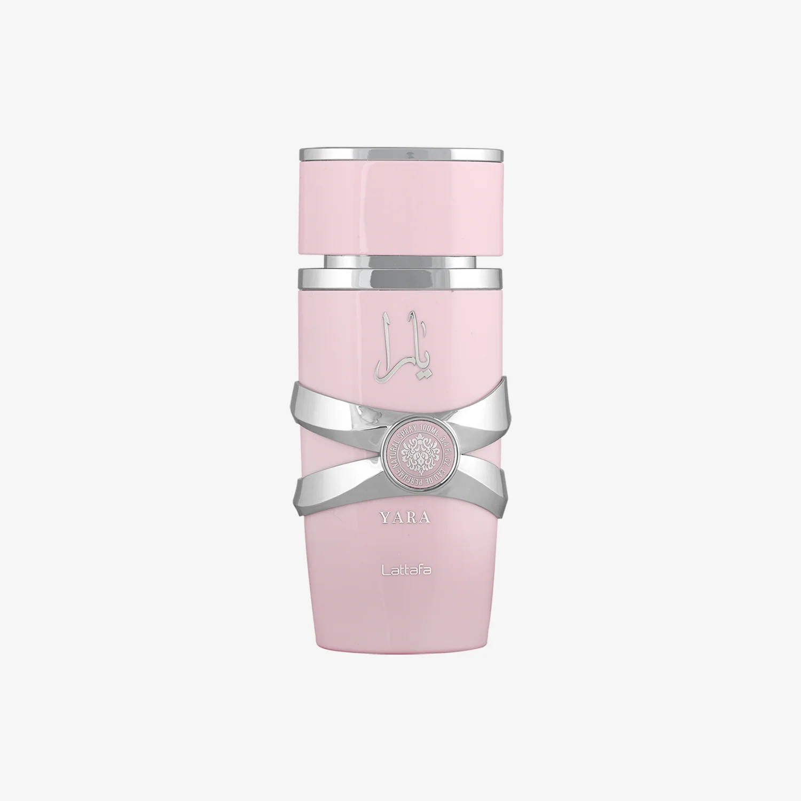
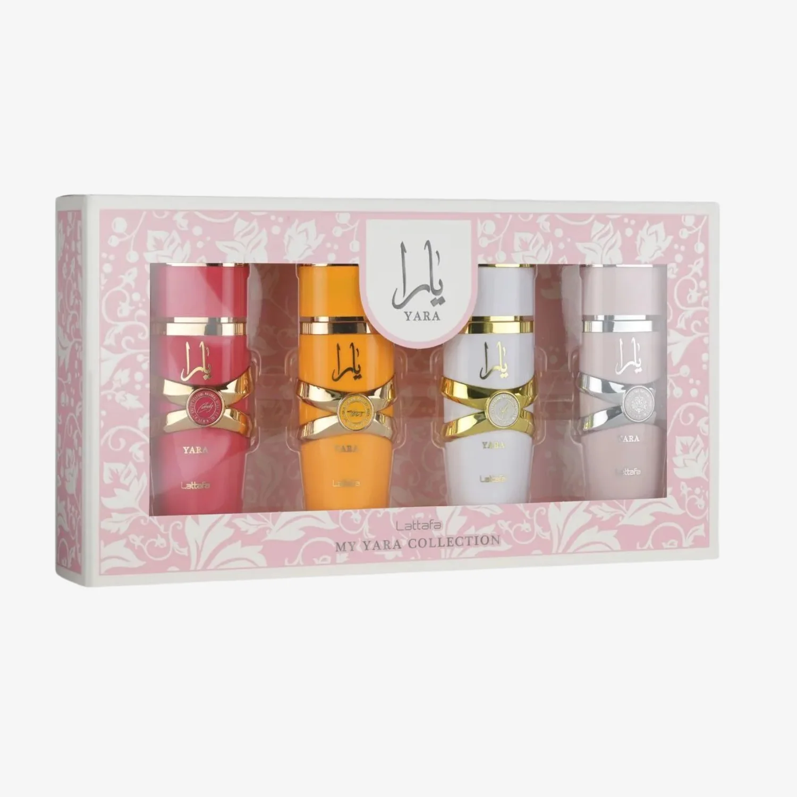
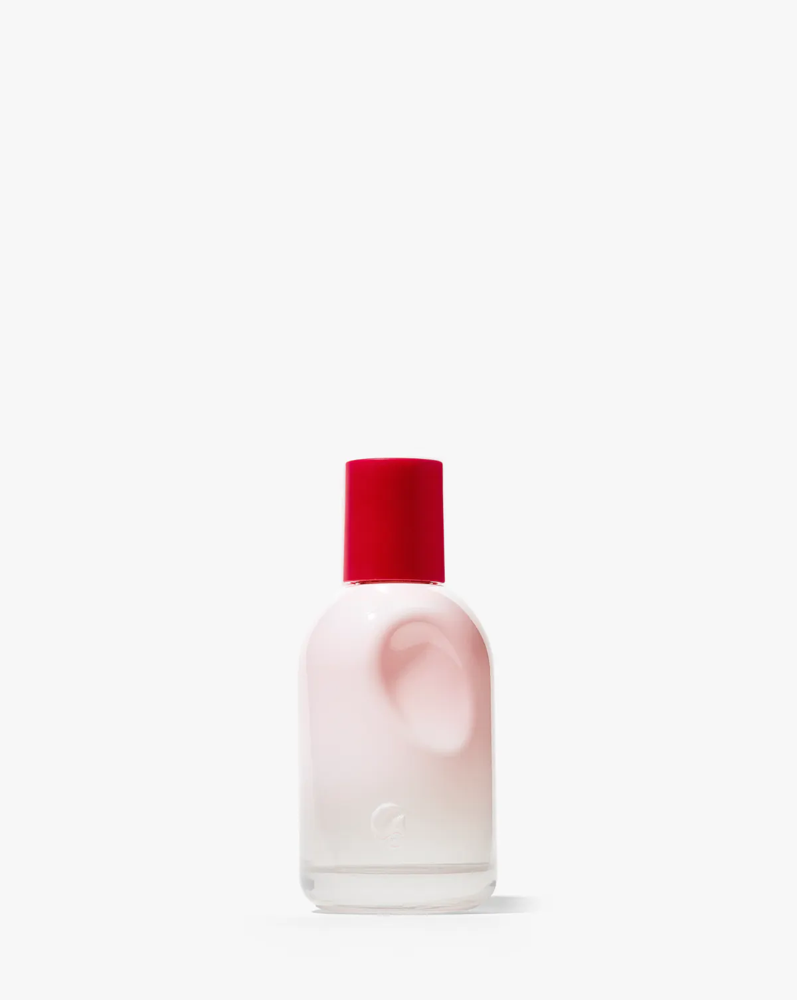
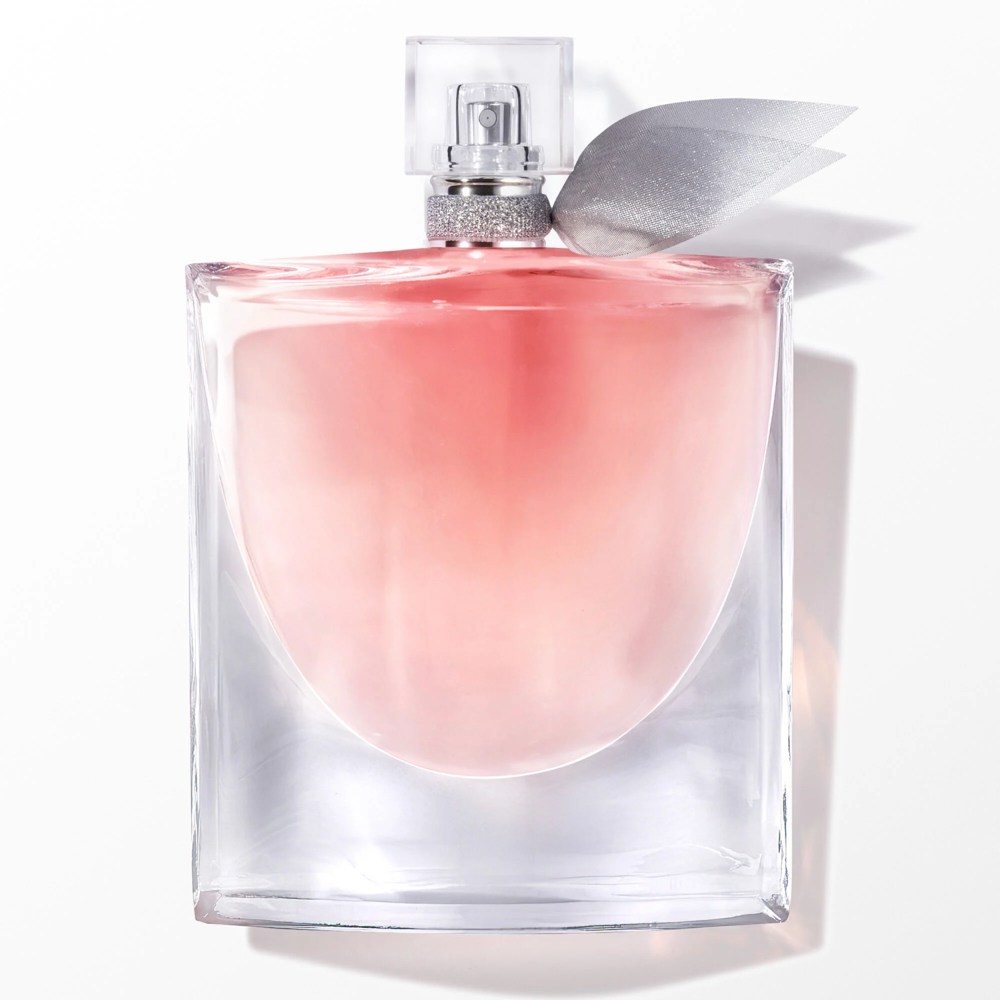
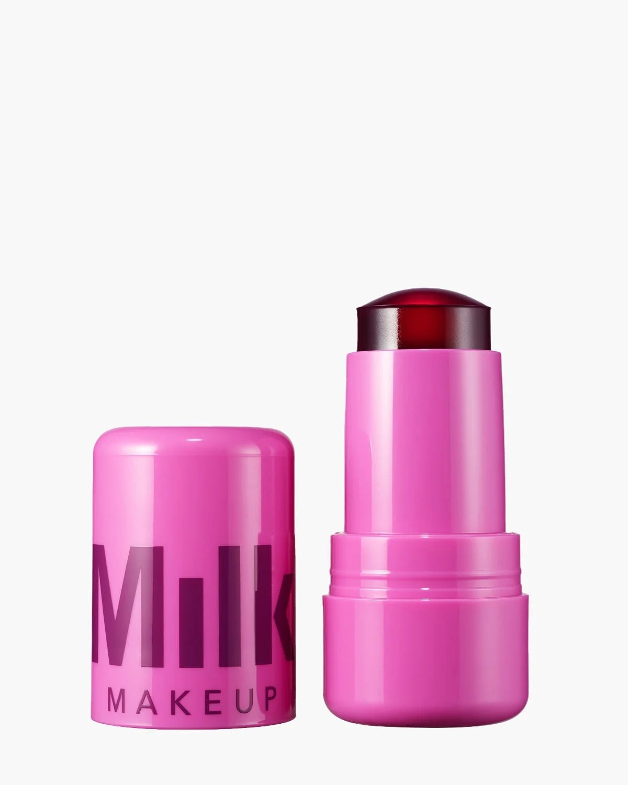

Christmas Gifts for Her: 5 Perfume and Beauty Gifts She Will Actually Use
Most perfume gifts sit on a shelf after one spray. These five do not. Each one is easy to wear every day, and each one layers with the others, so she can mix vanilla, musk and amber into a scent that fits her. Pick one for a stocking, or wrap all five for Christmas morning.
As an Amazon Associate I earn from qualifying purchases.
1. Lattafa Yara Eau de Parfum, 100ml: the vanilla she will reach for daily

Yara is a creamy, sweet vanilla gourmand. It suits someone who likes warm scents but wants one bottle that works for work, for dinner and for a cold morning. Two sprays on the neck and wrists is enough. On Amazon it holds 4.5 out of 5 stars from more than 48,000 ratings.
Layer it under a soft musk to stretch it through the day. See the vanilla base
2. Lattafa My Yara Collection gift set, 4 x 25ml: for her if she cannot pick one scent

Four mini bottles in one box: Yara, Yara Moi, Yara Tous and Yara Candy. This is the pick for someone who loves perfume but has not found one favourite yet. She can try a different mini each day, then ask for the full bottle of the one she keeps reaching for.
It also works as four small gifts in one box if she likes to share. See the gift set
3. Glossier You Eau de Parfum, 50ml: the quiet musk for someone who hates loud perfume

Glossier You is a soft skin musk. It blends with the wearer, so it smells a little different on everyone. Give this to someone who says perfume gives her a headache, or who likes a scent people only notice up close.
Spray it over Yara and the vanilla turns warm and clean instead of sweet. See the musk layer
4. Lancome La Vie Est Belle Eau de Parfum, 1.7 oz: the evening scent for Christmas dinner

La Vie Est Belle is iris and patchouli over warm vanilla and spun sugar. It suits Christmas dinner, a party, or any evening when she wants to smell dressed up. It is sold by Lancome itself on Amazon, with 4.6 out of 5 stars from more than 29,000 ratings.
One spray on each wrist is plenty. It lasts through the evening. See the amber finish
5. Milk Makeup Cooling Water Jelly Tint, Berry: the stocking stuffer she will use every day

A bouncy jelly stick that tints cheeks and lips berry. It is small enough for a stocking, and it is the gift that gets used the most. Swipe once for a light wash of colour, twice for a proper berry. Blend with fingertips.
It pairs with any of the perfumes above, and it fits in a coat pocket. See the jelly tint
How to choose
If she already owns a lot of perfume, give her the gift set. She gets four new scents to try, and none of them repeat what she has. If she owns almost no perfume, give her Yara. It is the easiest daily wear of the five. If she is hard to buy for, give her the jelly tint and Glossier You together. One is fun and useful, the other is quiet and personal, and the pair still feels like a real gift.
See the same five together in the Christmas gift guide.
Find us on Pinterest
Scent Stacking by Yuzhen (@ruanyuzhen999) on Pinterest
As an Amazon Associate I earn from qualifying purchases.